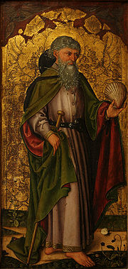

| Иаков Зеведеев Материал из Википедии — свободной энциклопедии |
|  Апостол Иаков (неизвестный мастер, 1475 год) |
Иаков Зеведеев (греч. Ιάκωβος , лат. Iacobus, исп. Santiago), Иаков Старший — апостол
Иисуса Христа, упоминаемый в Новом Завете. Иаков родился в Палестине, был убит в 44 году в
Иерусалиме. Старший брат Иоанна Богослова.
В Новом ЗаветеПо сообщениям Евангелий, вместе с отцом и братом был рыбаком. Сцена призвания братьев описана в Евангелии от Матфея (4:21) и Марка (1:19).Братья Иаков и Иоанн в Евангелиях именуются сыновьями Зеведеевыми по имени их отца Зеведея, также, по сообщению евангелиста Марка (Мк.3:17), Иисус назвал братьев Воанергес (дословно «сыновья грома»), очевидно за порывистый характер. В литературе Иакова Зеведеева также часто называют Иаковом Старшим, чтобы отличить его от апостола Иакова Алфеева и Иакова, «брата Господня» или Иакова Младшего. Иаков упомянут в списках апостолов в Евангелии от Матфея (10:2), от Марка (3:17), от Луки (6:4), а также в Деяниях Апостолов (1:13). Иаков наряду с братом и апостолом Петром был самым приближенным учеником Господа. Вместе с Петром и Иоанном он стал свидетелем воскрешения дочери Иаира (Мк.5:37; Лк.9:51). Только их Иисус сделал свидетелями своего Преображения (Мф.17:1; Мк.9:2 и Лк.9:28) и Гефсиманского борения (Мк.14:33). Порывистый характер братьев в полной мере проявился, когда они хотели низвести с неба огонь на самарянское селение (Лк.9:54); а также в просьбе дать сесть им в Царстве Небесном по правую и левую сторону от Иисуса (Мк.10:35-37). После воскресения и вознесения Иисуса Иаков появляется на страницах Деяний апостолов. Он вместе с другими апостолами был исполнен Святого Духа в день Пятидесятницы (Деян.2:1-4), участвовал в устроении первых христианских общин. В Деяниях сообщается и о его смерти (12:2), согласно этому сообщению царь Ирод Агриппа I «убил Иакова, брата Иоанна, мечом (греч. μαχαίρᾳ)». Судя по дальнейшему тексту это произошло в 44 году. Апостол Иаков — единственный апостол, чья смерть описана на страницах Нового Завета. |
ПочитаниеПамять в Католической церкви — 25 июля, в Православной церкви — 30 апреля и 30 июня (по юлианскому календарю).Согласно преданию, после мученической кончины апостола в 44 году на Святой земле, его останки были положены в лодку и пущены по волнам Средиземного моря. Чудесным образом эта лодка приплыла в Испанию, где святой проповедовал ранее, и была выброшена на берег в устье реки Улья (там, где появится позже город Сантьяго-де-Компостела). В 813 году, как гласит церковное предание, живший в этой местности монах-отшельник Пелайо, следуя за некоей путеводной звездой, обнаружил этот ковчег с мощами, которые оставались нетленными. Тогда же возникла легенда о проповеди самого Иакова на Пиренейском полуострове, исторически совершенно неправдоподобная. В 896-99 годах король Альфонс III издал указ, и на месте находки над мощами была построена небольшая церковь. Само место было названо Компостелла (лат. Campus Stellae, «Место, обозначенное звездой»). Святой Иаков, чудесно являвшийся во время битв с маврами, стал покровителем Испании и Реконкисты. Как апостол, предпринявший, по преданию, во время своего служения далёкое путешествие из Святой земли в Испанию, он стал считаться покровителем паломников[1]. К XI веку паломничество в Сантьяго-де-Компостела приобрело статус второго по значимости паломничества (после паломничества в Святую землю). В конце XX века традиция возродилась: для того, чтобы получить свидетельство о пройденном «пути Иакова», паломник должен пройти сто или проехать на велосипеде двести километров. По прибытии в город паломник предъявляет в соборе специальный документ «credencial» (паспорт пилигрима, действующий ещё со времен Средневековья) с отметками, сделанными в находящихся на пути пунктах, после чего получает написанный на латыни «Сертификат Компостелы». Когда день поминовения апостола Иакова, 25 июля, выпадает на воскресенье, то в Испании объявляется «год святого Иакова», соответственно, церковные празднества этом году особенно торжественны. В честь апостола Иакова названа также столица Чили — Сантьяго. Апостол считается покровителем района Марьялва в Португалии. |
ИконографияСамое старое изображение апостола — мозаика в Равенне VI века, Иаков изображён на ней в виде старца со свитком в руках. В дальнейшем его изображали также в виде странника с посохом, рыцаря на коне — Мавробойцы. Иаков был персонажем картин великих художников — Дюрера, Рубенса и многих других. |